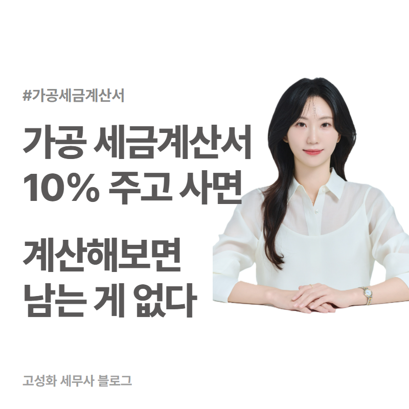
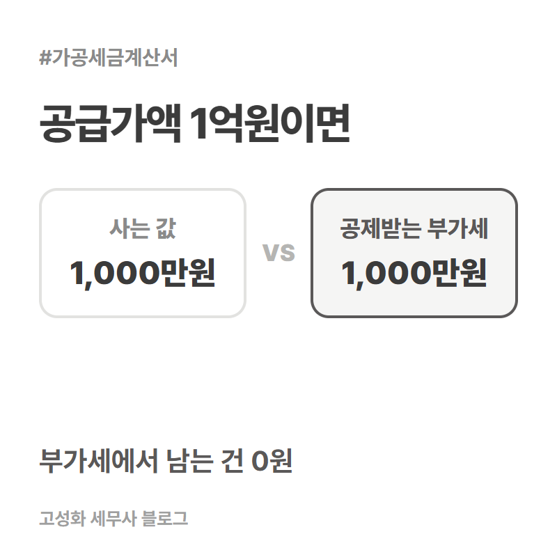
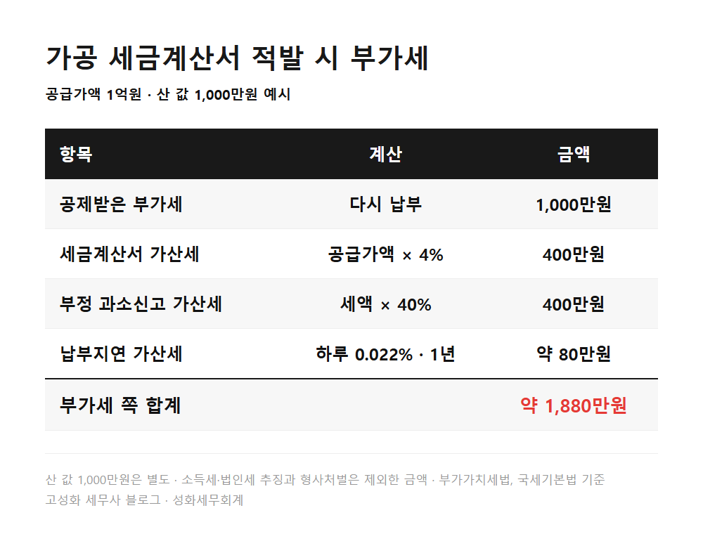

← 세무칼럼 목록
부가세·개인사업자
가공 세금계산서 10% 주고 사면, 계산해보면 남는 게 없습니다

"가공 세금계산서, 사도 되나요?"
비용이 모자라 세금이 많이 나올 것 같던 대표님이 가장 궁금하셨던 질문입니다.
공급가액의 10% 정도만 주면 살 수 있다는 이야기를 어디선가 들으신 상태였습니다.
답은 아래와 같았습니다.
이 글에서 다루는 내용
- 가공 세금계산서는 사는 순간 부가세 이득이 없어집니다
- 적발되면 어떤 세금이 다시 나오나
- 세금만 더 내고 끝나는 문제가 아닙니다
- 비용이 부족하다고 느끼실 때 먼저 볼 것
한눈에 보기


본문 전체와 근거 조문은 블로그에서 확인하실 수 있습니다.